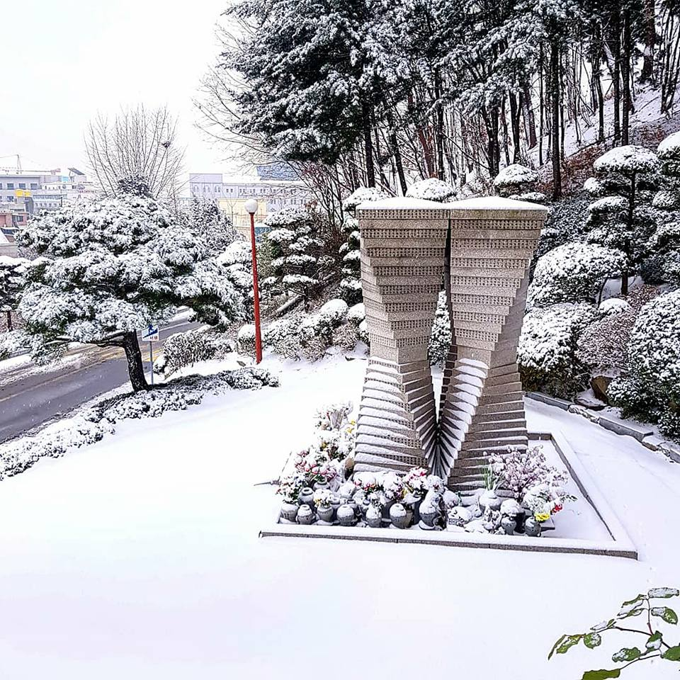

Paths Denied, Paths Created
Some memories fade as we grow older; others come into sharper focus. As my late father’s memorial day approaches, one conversation remains crystal clear: the one I had with him on my wedding day.
It was a few hours before the ceremony. We were sitting side by side in a hair salon, the stylist adding a final touch to my hair while rain slid down the window, when he began to speak. He told me, again, how my grandfather had forbidden him to attend college because, as the youngest son, he was expected to stay close to home. My father had been so frail that my grandfather even renamed him Myungryul, meaning “long life,” hoping the new characters would protect him.
He mounted a quiet rebellion, choosing numbers and circuits over rows of crops and spending thirty-two years as an electrician in a paper mill. It was one of the few outlets for his talent. In doing so, he escaped the rural life he was born into, but not the hardships etched into his path. Factory floors in Korea then were unforgiving: the pounding machines slowly stole hearing in one ear, and decades of dust and chemical haze, his likely suspects since he neither smoked nor drank, may have seeded the cancer that would eventually take his life.
When we talked that rainy morning, I had graduated from college and was working at a software start-up. Tech circles claimed they would “revolutionize” the world, while most products really just chased a few extra ad clicks. The louder the talk grew, the more skeptical I became. I wanted to answer even a single question properly, and that meant learning how to do research. Graduate school felt remote to someone from a working-class family, yet I applied for and received the Korea Foundation for Advanced Studies scholarship, one of the most prestigious and competitive fellowships in Korea, awarded that year to only two political science students to support their PhD studies abroad.
My father was excited about the news and about my marriage to my girlfriend, a year older and already thriving in an engineering career he himself might have loved. In us, he saw the opportunities he had once dreamed of: in me, an education reaching beyond the farm and factory floor; in her, a career shaped by mathematical skill and a passion for engineering.
He often said his greatest regret was letting his dream slip away and that he had no fixed plan for my career, only the hope I would follow my own path. I remember that conversation not just because of the rain’s hush, but because it was almost our last real talk. A few months later, cancer took him.
I moved to the United States and earned a PhD in political science at UC Berkeley. We hadn’t always seen eye to eye, but I dedicated my dissertation to him, hoping he might somehow know his sacrifices were acknowledged. After completing my degree, I began my career as a researcher and data scientist, always mindful of the path that brought me here. Today I’m often surrounded by people whose backgrounds rarely resemble mine, but I’ve never forgotten my father, our conversation on that rainy morning, or the dream he was never able to pursue.
It has been more than ten years since he passed away. I can no longer clearly recall his face or the exact sound of his voice. But I remember that conversation: the pain I felt, the sorrow I saw, and the regret I heard. That memory stays with me, sharper than any photograph, and it shapes the work I do.
Research is powered by curiosity, theory, and data, but for me it is also anchored in mission. That mission is personal: to stay with the hard, determined work of adding even a small measure of dignity for people like my father, people who rarely set foot on a college campus, who celebrated their children’s chances while quietly carrying the weight of doors closed to them.
While studying poverty and inequality in the U.S., my adopted home, I saw their struggles firsthand, spoke with them directly, listened to their stories, and learned from them, each one a reminder of my father.
Not everyone will sit in university lecture halls, but everyone deserves research that begins with their lives, listens to their stories, and, above all, serves them.
